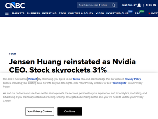
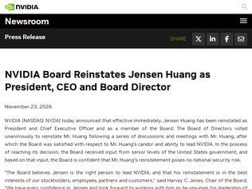
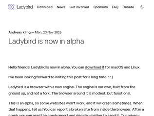
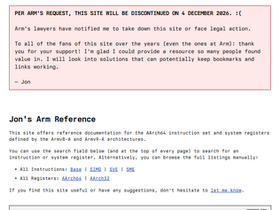
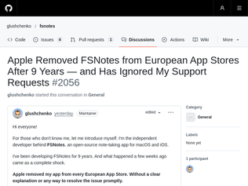

"“ In the process of reaching its decision, the Board received input from senior levels of the United States government, and based on that input, the Board is confident that Mr. Huang’s reinstatement poses no national security risk.”Feels like the most operative part of the statement."
"Some takes (and from talking to nvidia people):- Delaware precedent in Caremark has a very high bar for culpability of boards in matters like this. So I suspect the combination of DoJ saying they won't prosecute combined with this standard will successfully remove their individual liability.- I'm surprised this decision was completely unanimous at the board level, considering how they quickly forced him out. Full 180 in under two weeks.- The news media is really confusing selling chips to Megaspeed then hosting them in Malaysia (giving chinese companies access - afaik still legal under the old export regime) and Megaspeed smuggling these physical chips for hosting in Chinese data centers. Former was legal and second was not.- I would not be surprised if a pardon was mentioned at some point. Will be watching how state AGs end up getting involved. CA has already subpoenaed Nvidia for this.- There was a drum circle at Nvidia from employees who were petitioning to get him backDisclosure: I co-host a podcast that talks about this. More discussion if anyone is interested: https://www.youtube.com/watch?v=t8nLiELIhwA"
"Many people here are assuming Nvidia committed some kind of crime that would've been exposed if not for government intervention. Yes the US govt is corrupt but they're likely right that there's no actual evidence. If there was, it would've already leaked from whoever's been leaking all the intelligence so far.All of the stuff coming out has been pointing the other way. CIA/AG have both said they're unsure if the woman is a spy, US politicians briefed by intelligence have all said the same. Nvidia followed normal diligence in selling GPUs to a cloud provider in Southeast Asia (including visiting their data centers), then banned Megaspeed per government request in 2025. The idea that Nvidia knew they were smuggling hasn't been suggested by anyone involved in the actual investigations. Do people think Megaspeed told Jensen they were going to smuggle chips? What would be the possible benefit of this?The Congressional committees will be about Nvidia did enough extra diligence. And there's no criminal investigation of Nvidia, only against Megaspeed, contrary to what everyone's saying.The realistic risk for Nvidia isn't that executives get hauled off to jail for arguably weak diligence, it'd be more like Seagate's export control penalty (civil fine + audit requirements). But even then Seagate's case was way more clear cut."

"Comments moved to https://news.ycombinator.com/item?id=50611576, which was posted a bit earlier. Also, we generally prefer the best available third party article to corporate press releases*, since the latter usually omit relevant information.* https://hn.algolia.com/?dateRange=all&page=0&prefix=true&sor..."
"Good decision, he did nothing wrong!!!"
"One must imagine Dario gnashing his teeth"

"This actually worked amazingly well.I tested a lot of sites.. a few that were already opened in my firefox, and a few many others.. Every single one of them rendered correctly.This is truly amazing.. a new browser written from scratch that actually works!The only minor issue: page scrolling is a bit jerky.. not much.. just a little bit.. it's noticeable.A huge lots of congratulations to the Ladybird team. What a wonderful accomplishment truly this is."
"I am seriously impressed, BRAVO for this! I have tried a few websites that I considered tricky (from overloaded news websites to some more esoteric like ProxMox) and all seems to be in order. I am seriously impressed by the latter, I honestly didn't expect NoVNC [web view for remote virtual display] to be even snappier than it is in Firefox.I don't know of course if this ever becomes my daily driver, but I am surely giving it a serious try starting now. I am super excited and supportive of the idea of a true alternative browser, that alone is my motivation.P.S. Scrolling feels strange. I think FF smooths the movement, whereas in Ladybird it follows my scrolling precisely and interprets my finger jitter too just :) And some fonts look a bit blurry. None of these will stop me from me trying it out."
"Ladybird ditching a bunch of self developed libraries for production grade ones (like sqlite or skia) helped them immensely improve their browser.But I can't help but feel nostalgic at the original hacker spirit of LB+SerenityOS."
"The full comment is worth reposting here in its entirety:> Dario's spiel since GPT-2 has always been about hyping the dangers so that open models would be made illegal and *he* would stay in control.> He left OpenAI because he wasn't going to have control.> It's like the Ottoman Empire banning the printing press for Arabic so they would keep in control of the dogma.> It stops the population from freely accessing diverse knowledge.> It's a new form of medieval obscurantism.Agree or disagree with LeCun, he doesn't mince words!"
"They're getting everybody on subsidized plans and making everybody dependent and hoping to pull the rug out and force everybody to API pricing and finally make a profit. If there's open model alternatives, they're screwed."
"Yann LeCun is right."
"I love the transparency, or at least given technical details, that Zhipu provide - a refreshing change from the locked-down approach of the western companies, and an interesting glimpse into the direction of SOTA LLMs.Looped Transformers are an obvious direction even if there are still problems to be worked out. The original Transformer is a bit like an unrolled for loop, and rather unnaturally pairs different sets of weights, both for attention and feed forward (knowledge) with different "layers" (aka loop iterations). Far more natural is to strive for something more like our brain's thalamo-cortical loop and association cortex, where "thought" is iterative and there are no restrictions as to what patterns/knowledge get applied when.A similar idea has been explored before ("Universal Transformer", 2019), seemingly going nowhere, but perhaps "necessity is the mother of invention" and compute-starved Chinese companies are finding a way to make it work."
"Three pelicans - low, high, max: https://tools.simonwillison.net/markdown-svg-renderer?url=ht...Took me a while to get these because GLM-5.4 isn't available via OpenRouter or via the regular Z.ai API plan - I had to switch to their Coding Plan which it turns out gives you API keys that work exactly the same as their regular ones but have access to the new model.GLM-5.3 for comparison: https://tools.simonwillison.net/markdown-svg-renderer?url=ht... - those look pretty similar to GLM-5.4.GLM-5.2 had a VERY different pelican style, defaulting to gradients and animation: https://simonwillison.net/2026/Jun/17/glm-52/#excellent-peli..."
"It's becoming reaally hard using chinese models with their "marathon thinking" sessions. It's not a problem when dealing with more complex stuff but constantly second guessing themselves even when working with the simplest of things (conceptually) is very annoying and time to completion is dramatically higher compared to frontier unless you're dealing with ridiculus tps performance.I assume it's how they get close in benchmarks but the difference is staggering when compounding over several days/weeks/months."

"Hi, didn't expect to see this here, so adding a bit of info:They are requesting removal stating that I am using their trademarks and IP by hosting their documentation, which seems hard to work around while still keeping the site useful.People have contacted me offering to host mirrors, or suggesting I lawyer up or release the source code (sans Arm IP) to generate the same site for personal use. I'll be looking into all of these options.For those unfamiliar with this site until now: it's the ISA documentation, but with search and without all the popups and bloat. The aim has always been to make it the most comfortable and bullshit-free browsing experience for people who need these docs daily.Thanks for the support, everyone! :)"
"This is why in most companies lawyers should report to an engineer (or someone who understands the business) who signs off on these things.Going after this merely makes life harder for people ultimately providing value/income to ARM."
"Why would they threaten legal action over this? Surely documenting hardware should be fair use, right? Or are we somehow at the point where companies can decide who can even know how their publicly sold/release tech works?"
"Nice, I like this, though, it still needs Apple hardware. I think I would prefer if someone was to improve GNUstep instead. I always knew that in theory it implements the same APIs, etc. but, in my IUP fork, I managed to have the same Cocoa driver/backend compile for macOS and for the GNUstep on Linux/BSD. The driver is a little polluted with ifdefs for APIs that are not implemented though, and needs some patches, but I think it was still worth it.With the nice modern theme like Rik, you can have global menu like in macOS, and it looks much nicer than default theme. Improve theme, improve GNUstep and there you have it. You can check the GNUstep sample screenshot at https://github.com/gen2brain/iup-go ."
"MacOS, like Windows and unlike Linux, doesn't have a stable syscall interface. apps are instead required to dynamically link with libraries shipped with your system, which change in lockstep with the syscalls.This would make it possible to run the MacOS userspace on top of actual Linux, with little to no work in the kernel.I think that would be a more interesting effort to pursue."
"Makes me wonder if the next frontier is going to be something like “the OS is shipped encrypted with keys that only exist in hardware, and all the CPU knows how to do is to decrypt blocks and put them in the i-cache where it will not let you look at them”, to prevent you from doing anything with the OS executables other than running them on Apple chips."

"The app is still available in the US & UK app stores, so it was probably removed due to the EU's DSA. A cached copy of the Netherlands app store link[1] says, "Oleksandr Hlushchenko heeft zich niet geïdentificeerd als een handelaar van deze app" which translates to "Oleksandr Hlushchenko has not identified himself as a merchant for this app." Verified trader status is not a one-and-done thing. It can lapse for all kinds of reasons (such as an address changing).It sucks that Apple is unresponsive, but I think the author is leaving out some important information. When Apple removes your app from an app store, there's almost always a message saying why. He also doesn't say what his trader verification status is. App Store Connect shows whether it's pending, incomplete, rejected, etc.Also Pangram says the GitHub comment is mostly AI written.[2]1. https://www.google.com/search?q=site%3Aapps.apple.com%2Fnl%2...2. https://www.pangram.com/history/9bb8accd-9c56-4297-8d9c-45f0..."
"It's crazy that "upvotes" are now the de-facto entry barrier for official customer support."
"It took our app a month to get EU DSA approval on App store after the recent EU rule change in October (which delayed our approval originally). This was for our new app though not an existing one.Sounds like he's only waited <3 weeks.The App store review team is under tons of load from the various AI-gen apps being submitted these days, similar to Github but with humans."
"I'm a Kagi customer, but thoroughly uninterested in this. Fastmail is not just good enough, but good. Fastmail has been stable for decades, with a comfortable pace of progress/changes.AI is Kagi Mail's biggest selling point, but I won't ever let a cloud LLM access my emails whatsoever."
"Kagi duo subscriber. Love the service and have evangelized about it to others, but worried about the feature creep and how it will affect core services. I used to love kagi translate but the quality has suffered significantly lately. And to add insult to injury, it is now capped and a separate subscription in the setting of falling quality. My s/o who used it extensively has virtually stopped due to bugs. And her search use has dropped precipitously. Before kagi, I had a proton account. I was happy with their email for years, then they added a ton of features in a short time and I was having email send and receive problems in the midst of a job hunt that reflected very poorly on my basic competence. Canceled shortly after.The point is, please don't over extend. Response time for support tickets is already in months."
"Not sure I like it. What bugs me is that Kagi - in my perception - ran on the idea they don't really store user data (no search history, assistant conversations expire by default, all that's persisted there is basic user account data), and this seem to be a major paradigm change. While I trust them to not pull any switcheroos and not abuse this, that's still a notable change that may affect how Kagi sees themselves.Plus, if you don't have the data you can't be even tempted to do anything its owners wouldn't enjoy. If you do have the data...Either way, while I'm a very happy Kagi Search user, I self-host my mail, so I'm not a target audience for this product."
"Cool. This looks fun and I believe you had fun playing with it.I’ve been having fun with miniature 3D Isometric maps for a while, of course, with AI (Claude Code). I’m fascinated by the work of https://miniworld.marceloeduardo.com which I stumbled on as I was tinkering with a few of my ideas.His Los Angeles map[1] popped up and I have a soft corner for that city and it led me into a rabbit hole.Unlike the US, UK, and European region, India do not have 3D (no, Google do not have them). I also wanted to use only open data, nothing to call a third-party service, no photographs, no satellite data/imagery, and be able to deploy on Cloudflare Stack with the least money ever to spent except my Anthropic Tokens.I wanted the geography to be as close to real as possible as most of them are stationery; roads, railways, the metro, lakes, building footprints, and most building heights.Everything is pretty much drawn with AI Codes, so I don’t have to re-render anything when the data changes or updates. I scheduled the map tile creation on a MacBook Pro M1 only when I slept, so it took a few days but I like what I saw. I will, hopefully, find it intersting enough to keep tinkering with them.The first thing I did was re-discover hometown[2] as I have no recollection or are not good with where the places are. In that similar style but where I can afford to add rotation more info/date along multiple axis - a short 3D view of walk-way along London's South Bank.[3]1. https://miniworld.marceloeduardo.com/cidades/?city=los_angel...2. https://manipur.oinam.com/3. https://brajeshwar.com/misc/london-southbank/"
"I did something similar about a month ago with my city. I takes around 3h with LLMs to build. Also, there was no good data source for 3D models in my area so agent loop was building them in a loop from photos found online. You can see it here: https://bb.jest.pro"
"This is weirdly broken once you start zooming in. Try searching for Patricia's Green in Hayes Valley for example - the park is straight up missing."

Nvidia Reinstates Jensen Huang as CEO
"“ In the process of reaching its decision, the Board received input from senior levels of the United States government, and based on that input, the Board is confident that Mr. Huang’s reinstatement poses no national security risk.”Feels like the most operative part of the statement."
"Some takes (and from talking to nvidia people):- Delaware precedent in Caremark has a very high bar for culpability of boards in matters like this. So I suspect the combination of DoJ saying they won't prosecute combined with this standard will successfully remove their individual liability.- I'm surprised this decision was completely unanimous at the board level, considering how they quickly forced him out. Full 180 in under two weeks.- The news media is really confusing selling chips to Megaspeed then hosting them in Malaysia (giving chinese companies access - afaik still legal under the old export regime) and Megaspeed smuggling these physical chips for hosting in Chinese data centers. Former was legal and second was not.- I would not be surprised if a pardon was mentioned at some point. Will be watching how state AGs end up getting involved. CA has already subpoenaed Nvidia for this.- There was a drum circle at Nvidia from employees who were petitioning to get him backDisclosure: I co-host a podcast that talks about this. More discussion if anyone is interested: https://www.youtube.com/watch?v=t8nLiELIhwA"
"Many people here are assuming Nvidia committed some kind of crime that would've been exposed if not for government intervention. Yes the US govt is corrupt but they're likely right that there's no actual evidence. If there was, it would've already leaked from whoever's been leaking all the intelligence so far.All of the stuff coming out has been pointing the other way. CIA/AG have both said they're unsure if the woman is a spy, US politicians briefed by intelligence have all said the same. Nvidia followed normal diligence in selling GPUs to a cloud provider in Southeast Asia (including visiting their data centers), then banned Megaspeed per government request in 2025. The idea that Nvidia knew they were smuggling hasn't been suggested by anyone involved in the actual investigations. Do people think Megaspeed told Jensen they were going to smuggle chips? What would be the possible benefit of this?The Congressional committees will be about Nvidia did enough extra diligence. And there's no criminal investigation of Nvidia, only against Megaspeed, contrary to what everyone's saying.The realistic risk for Nvidia isn't that executives get hauled off to jail for arguably weak diligence, it'd be more like Seagate's export control penalty (civil fine + audit requirements). But even then Seagate's case was way more clear cut."